Note
Click here to download the full example code
Usage of Bayesian inference¶
The :class:~.BayesTool provides methods to perform the calibration
under uncertainties of a model.
from __future__ import annotations
from gemseo.datasets.dataset import Dataset
from numpy import random
from openturns import ComposedDistribution
from openturns import Uniform
from strenum import StrEnum
from vimseo.api import activate_logger
from vimseo.tools.bayes.bayes_analysis import BayesTool
from vimseo.tools.bayes.bayes_analysis_result import PosteriorChecks
from vimseo.tools.statistics.statistics_tool import StatisticsTool
random.seed(0) # noqa: NPY002
activate_logger()
N_MCMC = 100
1) Set-up of the stochastic model¶
We start loading the experimental data that will be processed to calibrate models:
data_modulus = random.logistic(150000, 8000, 8) # noqa: NPY002
We want to calibrate several probabilistic models, that is to say probability distributions, for instance Normal, Weibull, Log-normal:
class Models(StrEnum):
NORMAL = "Normal"
WEIBULL_MIN = "WeibullMin"
LOG_NORMAL = "LogNormal"
analysis_n = BayesTool(working_directory="normal_model")
analysis_l = BayesTool(working_directory="lognormal_model")
analysis_w = BayesTool(working_directory="weibullmin_model")
Out:
/home/sebastien.bocquet/PycharmProjects/vimseo/.tox/doc/lib/python3.11/site-packages/pydantic/_internal/_generate_schema.py:547: UserWarning:
<module 'openturns.dist' from '/home/sebastien.bocquet/PycharmProjects/vimseo/.tox/doc/lib/python3.11/site-packages/openturns/dist.py'> is not a Python type (it may be an instance of an object), Pydantic will allow any object with no validation since we cannot even enforce that the input is an instance of the given type. To get rid of this error wrap the type with `pydantic.SkipValidation`.
/home/sebastien.bocquet/PycharmProjects/vimseo/.tox/doc/lib/python3.11/site-packages/pydantic/_internal/_generate_schema.py:547: UserWarning:
<built-in function array> is not a Python type (it may be an instance of an object), Pydantic will allow any object with no validation since we cannot even enforce that the input is an instance of the given type. To get rid of this error wrap the type with `pydantic.SkipValidation`.
For each model, it is necessary to define a prior. Except for the Normal model, it is difficult to give an initial guess for the Weibull and Lognormal model. To achieve this goal, we compute the frequentist estimates of the model parameters. The result of the frequentist estimate for the Normal model:
statistic_tool = StatisticsTool()
dataset = Dataset.from_array(data_modulus.reshape(-1, 1))
results_normal = statistic_tool.execute(
dataset=dataset, tested_distributions=["Normal"]
)
Out:
INFO - 16:52:58: Working directory is /home/sebastien.bocquet/PycharmProjects/vimseo/docs/runnable_examples/12_bayesian_calibration/StatisticsTool/34
INFO - 16:52:58: | Set goodness-of-fit criterion: Kolmogorov.
INFO - 16:52:58: | Set significance level of hypothesis test: 0.05.
INFO - 16:52:58: Fit different distributions (Normal) per variable and compute the goodness-of-fit criterion.
INFO - 16:52:58: | Fit different distributions for x_0.
INFO - 16:52:58: Select the best distribution for each variable.
INFO - 16:52:58: | The best distribution for x_0[0] is Normal([153865,6190.86]).
From this result, we set-up the prior:
prior_normal = ComposedDistribution([Uniform(110000, 160000), Uniform(2000, 12000)])
Similarly for the Weibull Min model: the frequentist estimate:
results_weibull = statistic_tool.execute(
dataset=dataset, tested_distributions=["WeibullMin"]
)
Out:
INFO - 16:52:58: Working directory is /home/sebastien.bocquet/PycharmProjects/vimseo/docs/runnable_examples/12_bayesian_calibration/StatisticsTool/35
INFO - 16:52:58: | Set goodness-of-fit criterion: Kolmogorov.
INFO - 16:52:58: | Set significance level of hypothesis test: 0.05.
INFO - 16:52:58: Fit different distributions (WeibullMin) per variable and compute the goodness-of-fit criterion.
INFO - 16:52:58: | Fit different distributions for x_0.
INFO - 16:52:58: Select the best distribution for each variable.
INFO - 16:52:58: | The best distribution for x_0[0] is WeibullMin([8881.89,0.786344,147538]).
And the corresponding prior:
prior_weibull = ComposedDistribution([
Uniform(2000, 30000),
Uniform(0.1, 5),
Uniform(130000, min(data_modulus)),
])
And for the Log Normal model:
results_lognormal = statistic_tool.execute(
dataset=dataset, tested_distributions=["LogNormal"]
)
Out:
INFO - 16:52:58: Working directory is /home/sebastien.bocquet/PycharmProjects/vimseo/docs/runnable_examples/12_bayesian_calibration/StatisticsTool/36
INFO - 16:52:58: | Set goodness-of-fit criterion: Kolmogorov.
INFO - 16:52:58: | Set significance level of hypothesis test: 0.05.
INFO - 16:52:58: Fit different distributions (LogNormal) per variable and compute the goodness-of-fit criterion.
INFO - 16:52:58: | Fit different distributions for x_0.
INFO - 16:52:58: Select the best distribution for each variable.
INFO - 16:52:58: | The best distribution for x_0[0] is LogNormal([9.10154,0.549377,143435]).
And corresponding prior:
prior_lognormal = ComposedDistribution([
Uniform(4, 15),
Uniform(0.01, 5),
Uniform(130000, min(data_modulus)),
])
2) Executing Bayesian inference¶
We can now sample the posterior distribution of the parameters of the normal model,
analysis_n.execute(
likelihood_dist=Models.NORMAL,
prior_dist=prior_normal,
data=data_modulus,
n_mcmc=N_MCMC,
)
analysis_n.save_results()
analysis_n.result
Out:
INFO - 16:52:58: Working directory is /home/sebastien.bocquet/PycharmProjects/vimseo/docs/runnable_examples/12_bayesian_calibration/normal_model
0%| | 0/100 [00:00<?, ?it/s]
37%|###7 | 37/100 [00:00<00:00, 367.85it/s]
75%|#######5 | 75/100 [00:00<00:00, 373.03it/s]
100%|##########| 100/100 [00:00<00:00, 371.72it/s]
INFO - 16:52:58: Saving result to /home/sebastien.bocquet/PycharmProjects/vimseo/docs/runnable_examples/12_bayesian_calibration/normal_model/BayesTool_result.hdf5
INFO - 16:52:58: PICKLE fallback: key='prior_dist', type=<class 'openturns.model_copula.ComposedDistribution'>, value=ComposedDistribution(Uniform(a = 110000, b = 160000), Uniform(a = 2000, b = 12000), IndependentCopula(dimension = 2))
BayesAnalysisResult(metadata=ToolResultMetadata(generic={'datetime': '11-05-2026_16-52-58', 'version': '0.1.7.dev11+g45528c259'}, misc={}, settings={'likelihood_dist': 'Normal', 'prior_dist': <openturns.model_copula.ComposedDistribution; proxy of <Swig Object of type 'OT::ComposedDistribution *' at 0x7f2704a45f20> >, 'frozen_variables': {}}, report={}, model=None), raw_samples=array([[[134998.81387976, 6999.84497324],
[135000.8461801 , 7001.51023739],
[135003.70474143, 7000.12948091],
...,
[134984.13308618, 6998.79095725],
[134994.57504503, 6997.85538255],
[134994.9207681 , 7001.48288663]],
[[134994.87037127, 7000.18766419],
[134999.20158564, 7003.0107474 ],
[135002.07240448, 7000.1402315 ],
...,
[134984.72473605, 6998.83114841],
[134985.98516188, 6998.0038366 ],
[134993.37200983, 7001.47573781]],
[[134995.57350347, 7000.22103216],
[134998.48380321, 7002.7218349 ],
[135004.15231766, 6998.64396303],
...,
[134983.63743421, 6997.57410357],
[134975.69326528, 6996.43524083],
[134977.82688779, 7005.51947823]],
...,
[[155654.14484208, 5706.30581235],
[154083.27558284, 4606.93999371],
[154695.08713883, 6476.95581719],
...,
[158064.52252949, 5799.71371532],
[156989.32933381, 6222.45636738],
[155134.26711863, 5385.306681 ]],
[[154923.06310122, 6836.69645086],
[154083.27558284, 4606.93999371],
[157463.95407574, 6573.18778495],
...,
[158064.52252949, 5799.71371532],
[158010.12801527, 6226.50455578],
[155035.31700282, 5206.47530265]],
[[155517.81478962, 6491.11207254],
[154061.76366549, 4801.10254279],
[157881.2780495 , 6886.2236991 ],
...,
[157795.57495445, 5827.59889206],
[158905.79333766, 6591.97246817],
[154759.15332458, 5091.48495941]]]), thin_number=30, ndim=2, processed_samples=None, posterior_predictive=None, lppd=None, ml=None)
of the parameters of the weibull model,
analysis_w.execute(
likelihood_dist=Models.WEIBULL_MIN,
prior_dist=prior_weibull,
data=data_modulus,
n_mcmc=N_MCMC,
)
analysis_w.save_results()
analysis_w.result
Out:
INFO - 16:52:58: Working directory is /home/sebastien.bocquet/PycharmProjects/vimseo/docs/runnable_examples/12_bayesian_calibration/weibullmin_model
0%| | 0/100 [00:00<?, ?it/s]
33%|###3 | 33/100 [00:00<00:00, 323.65it/s]
70%|####### | 70/100 [00:00<00:00, 345.62it/s]
100%|##########| 100/100 [00:00<00:00, 349.58it/s]
INFO - 16:52:59: Saving result to /home/sebastien.bocquet/PycharmProjects/vimseo/docs/runnable_examples/12_bayesian_calibration/weibullmin_model/BayesTool_result.hdf5
INFO - 16:52:59: PICKLE fallback: key='prior_dist', type=<class 'openturns.model_copula.ComposedDistribution'>, value=ComposedDistribution(Uniform(a = 2000, b = 30000), Uniform(a = 0.1, b = 5), Uniform(a = 130000, b = 147538), IndependentCopula(dimension = 3))
BayesAnalysisResult(metadata=ToolResultMetadata(generic={'datetime': '11-05-2026_16-52-58', 'version': '0.1.7.dev11+g45528c259'}, misc={}, settings={'likelihood_dist': 'WeibullMin', 'prior_dist': <openturns.model_copula.ComposedDistribution; proxy of <Swig Object of type 'OT::ComposedDistribution *' at 0x7f27049fc7e0> >, 'frozen_variables': {}}, report={}, model=None), raw_samples=array([[[1.59974057e+04, 2.55001549e+00, 1.38770167e+05],
[1.60003612e+04, 2.55055831e+00, 1.38766683e+05],
[1.60049353e+04, 2.54988750e+00, 1.38764813e+05],
...,
[1.59980415e+04, 2.54978476e+00, 1.38772699e+05],
[1.60004211e+04, 2.54969802e+00, 1.38769308e+05],
[1.59954402e+04, 2.55109808e+00, 1.38769168e+05]],
[[1.59954891e+04, 2.55011544e+00, 1.38769738e+05],
[1.59989474e+04, 2.55054210e+00, 1.38764715e+05],
[1.60048468e+04, 2.54991016e+00, 1.38764689e+05],
...,
[1.59979961e+04, 2.54977961e+00, 1.38772796e+05],
[1.60006905e+04, 2.55008435e+00, 1.38767055e+05],
[1.59952148e+04, 2.55123898e+00, 1.38768983e+05]],
[[1.59963447e+04, 2.55010877e+00, 1.38770359e+05],
[1.59983762e+04, 2.55044700e+00, 1.38765953e+05],
[1.60048468e+04, 2.54991016e+00, 1.38764689e+05],
...,
[1.59990298e+04, 2.54915161e+00, 1.38776289e+05],
[1.59998637e+04, 2.55044548e+00, 1.38769370e+05],
[1.59930686e+04, 2.55191731e+00, 1.38767097e+05]],
...,
[[1.41996252e+04, 2.36458673e+00, 1.43115573e+05],
[7.17265424e+03, 1.51704911e+00, 1.44666052e+05],
[1.46876351e+04, 2.39197538e+00, 1.42236356e+05],
...,
[1.70392234e+04, 2.87915975e+00, 1.41111248e+05],
[9.70553289e+03, 2.09122996e+00, 1.44700942e+05],
[6.58897818e+03, 1.13427171e+00, 1.47157151e+05]],
[[1.23330919e+04, 2.03166313e+00, 1.43887645e+05],
[7.17265424e+03, 1.51704911e+00, 1.44666052e+05],
[1.07186482e+04, 1.71046133e+00, 1.44177994e+05],
...,
[1.74653388e+04, 3.14537303e+00, 1.40414023e+05],
[1.00013155e+04, 2.22592526e+00, 1.44255908e+05],
[6.89888512e+03, 1.15887416e+00, 1.47040571e+05]],
[[1.60723655e+04, 2.65443887e+00, 1.40961479e+05],
[8.28924206e+03, 1.51450470e+00, 1.44216251e+05],
[9.84518360e+03, 1.65160761e+00, 1.45586752e+05],
...,
[1.74653388e+04, 3.14537303e+00, 1.40414023e+05],
[1.06937069e+04, 1.97681901e+00, 1.43260574e+05],
[6.89888512e+03, 1.15887416e+00, 1.47040571e+05]]]), thin_number=30, ndim=3, processed_samples=None, posterior_predictive=None, lppd=None, ml=None)
of the parameters of the lognormal model,
analysis_l.execute(
likelihood_dist=Models.LOG_NORMAL,
prior_dist=prior_lognormal,
data=data_modulus,
n_mcmc=N_MCMC,
)
analysis_l.save_results()
analysis_l.result
Out:
INFO - 16:52:59: Working directory is /home/sebastien.bocquet/PycharmProjects/vimseo/docs/runnable_examples/12_bayesian_calibration/lognormal_model
0%| | 0/100 [00:00<?, ?it/s]
35%|###5 | 35/100 [00:00<00:00, 342.80it/s]
73%|#######3 | 73/100 [00:00<00:00, 361.95it/s]
100%|##########| 100/100 [00:00<00:00, 363.94it/s]
INFO - 16:52:59: Saving result to /home/sebastien.bocquet/PycharmProjects/vimseo/docs/runnable_examples/12_bayesian_calibration/lognormal_model/BayesTool_result.hdf5
INFO - 16:52:59: PICKLE fallback: key='prior_dist', type=<class 'openturns.model_copula.ComposedDistribution'>, value=ComposedDistribution(Uniform(a = 4, b = 15), Uniform(a = 0.01, b = 5), Uniform(a = 130000, b = 147538), IndependentCopula(dimension = 3))
BayesAnalysisResult(metadata=ToolResultMetadata(generic={'datetime': '11-05-2026_16-52-58', 'version': '0.1.7.dev11+g45528c259'}, misc={}, settings={'likelihood_dist': 'LogNormal', 'prior_dist': <openturns.model_copula.ComposedDistribution; proxy of <Swig Object of type 'OT::ComposedDistribution *' at 0x7f27049fcdb0> >, 'frozen_variables': {}}, report={}, model=None), raw_samples=array([[[9.49861761e+00, 2.50477400e+00, 1.38767940e+05],
[9.50212447e+00, 2.50547371e+00, 1.38769001e+05],
[9.49902546e+00, 2.50524424e+00, 1.38767471e+05],
...,
[9.50069846e+00, 2.50468672e+00, 1.38768213e+05],
[9.49981985e+00, 2.50482842e+00, 1.38768414e+05],
[9.49796166e+00, 2.50615203e+00, 1.38772742e+05]],
[[9.49826981e+00, 2.50437301e+00, 1.38768339e+05],
[9.50212447e+00, 2.50547371e+00, 1.38769001e+05],
[9.49897420e+00, 2.50598418e+00, 1.38763887e+05],
...,
[9.50026811e+00, 2.50473933e+00, 1.38768419e+05],
[9.49981985e+00, 2.50482842e+00, 1.38768414e+05],
[9.49797721e+00, 2.50660874e+00, 1.38773848e+05]],
[[9.49309654e+00, 2.50342389e+00, 1.38763874e+05],
[9.50227965e+00, 2.50482987e+00, 1.38772601e+05],
[9.49881829e+00, 2.50619727e+00, 1.38763052e+05],
...,
[9.50022861e+00, 2.50471322e+00, 1.38768919e+05],
[9.49986707e+00, 2.50482790e+00, 1.38768266e+05],
[9.49797721e+00, 2.50660874e+00, 1.38773848e+05]],
...,
[[1.03252563e+01, 3.61029671e+00, 1.47374700e+05],
[9.71154836e+00, 7.56948674e-01, 1.41141103e+05],
[9.53245702e+00, 4.51606742e+00, 1.47532336e+05],
...,
[8.33486111e+00, 1.10457614e+00, 1.47189269e+05],
[8.78618317e+00, 7.98811450e-01, 1.45345562e+05],
[9.14748643e+00, 1.31622264e+00, 1.45384956e+05]],
[[1.03252563e+01, 3.61029671e+00, 1.47374700e+05],
[9.45794546e+00, 7.38859766e-01, 1.42186481e+05],
[9.53245702e+00, 4.51606742e+00, 1.47532336e+05],
...,
[8.33486111e+00, 1.10457614e+00, 1.47189269e+05],
[8.78618317e+00, 7.98811450e-01, 1.45345562e+05],
[9.14748643e+00, 1.31622264e+00, 1.45384956e+05]],
[[1.05755349e+01, 3.65788381e+00, 1.47385479e+05],
[9.45319957e+00, 7.38865358e-01, 1.42216874e+05],
[9.53245702e+00, 4.51606742e+00, 1.47532336e+05],
...,
[8.33486111e+00, 1.10457614e+00, 1.47189269e+05],
[8.78618317e+00, 7.98811450e-01, 1.45345562e+05],
[8.68100172e+00, 1.29053718e+00, 1.46412044e+05]]]), thin_number=30, ndim=3, processed_samples=None, posterior_predictive=None, lppd=None, ml=None)
Then, we determine the burnin for each MCMC sampling. First for the Normal model:
analysis_n.plot_burnin(analysis_n.result, save=False, show=True)
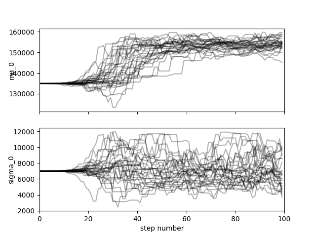
Out:
/home/sebastien.bocquet/PycharmProjects/vimseo/.tox/doc/lib/python3.11/site-packages/gemseo/utils/matplotlib_figure.py:59: UserWarning:
FigureCanvasAgg is non-interactive, and thus cannot be shown
<Figure size 640x480 with 2 Axes>
Then, the Weibull Min model:
analysis_w.plot_burnin(analysis_w.result, save=False, show=True)
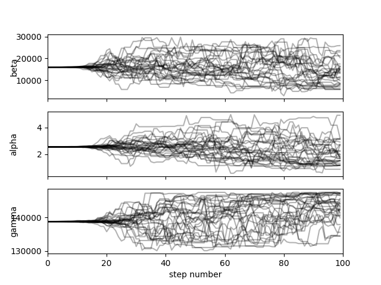
Out:
/home/sebastien.bocquet/PycharmProjects/vimseo/.tox/doc/lib/python3.11/site-packages/gemseo/utils/matplotlib_figure.py:59: UserWarning:
FigureCanvasAgg is non-interactive, and thus cannot be shown
<Figure size 640x480 with 3 Axes>
And the Log Normal model:
analysis_l.plot_burnin(analysis_l.result, save=False, show=True)
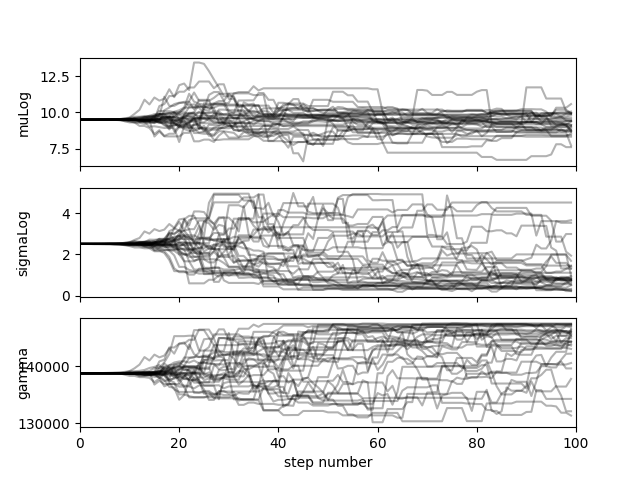
Out:
/home/sebastien.bocquet/PycharmProjects/vimseo/.tox/doc/lib/python3.11/site-packages/gemseo/utils/matplotlib_figure.py:59: UserWarning:
FigureCanvasAgg is non-interactive, and thus cannot be shown
<Figure size 640x480 with 3 Axes>
A value of 50 for the burnin seems ok for sampler is thus selected.
burnin = 50
Then, we post-process the results for each models before analyzing the results, first for the Normal model:
analysis_n.post(50, n_mcmc=N_MCMC, nb_samples_ml=10, nb_samples_posterior=5)
# then for the Weibull Min model:
analysis_w.post(50, n_mcmc=N_MCMC, nb_samples_ml=10, nb_samples_posterior=5)
# And the Log Normal model:
analysis_l.post(50, n_mcmc=N_MCMC, nb_samples_ml=10, nb_samples_posterior=5)
Out:
WARNING - 16:52:59: A minimum of posterior samples of samples is recommended to ensure convergence.
WARNING - 16:52:59: Make sure enough samples are generated to draw reliable conclusions from the criterion (at least 10000)
0%| | 0/100 [00:00<?, ?it/s]
36%|###6 | 36/100 [00:00<00:00, 350.45it/s]
73%|#######3 | 73/100 [00:00<00:00, 359.18it/s]
100%|##########| 100/100 [00:00<00:00, 360.76it/s]
0%| | 0/100 [00:00<?, ?it/s]
36%|###6 | 36/100 [00:00<00:00, 350.74it/s]
73%|#######3 | 73/100 [00:00<00:00, 360.28it/s]
100%|##########| 100/100 [00:00<00:00, 358.38it/s]
0%| | 0/100 [00:00<?, ?it/s]
36%|###6 | 36/100 [00:00<00:00, 350.34it/s]
72%|#######2 | 72/100 [00:00<00:00, 354.08it/s]
100%|##########| 100/100 [00:00<00:00, 355.97it/s]
0%| | 0/100 [00:00<?, ?it/s]
36%|###6 | 36/100 [00:00<00:00, 351.21it/s]
73%|#######3 | 73/100 [00:00<00:00, 356.39it/s]
100%|##########| 100/100 [00:00<00:00, 357.83it/s]
0%| | 0/100 [00:00<?, ?it/s]
35%|###5 | 35/100 [00:00<00:00, 346.60it/s]
72%|#######2 | 72/100 [00:00<00:00, 359.51it/s]
100%|##########| 100/100 [00:00<00:00, 361.70it/s]
0%| | 0/100 [00:00<?, ?it/s]
36%|###6 | 36/100 [00:00<00:00, 356.44it/s]
73%|#######3 | 73/100 [00:00<00:00, 360.72it/s]
100%|##########| 100/100 [00:00<00:00, 359.88it/s]
0%| | 0/100 [00:00<?, ?it/s]
35%|###5 | 35/100 [00:00<00:00, 346.41it/s]
72%|#######2 | 72/100 [00:00<00:00, 357.80it/s]
100%|##########| 100/100 [00:00<00:00, 360.20it/s]
0%| | 0/100 [00:00<?, ?it/s]
35%|###5 | 35/100 [00:00<00:00, 340.25it/s]
71%|#######1 | 71/100 [00:00<00:00, 347.18it/s]
100%|##########| 100/100 [00:00<00:00, 346.92it/s]
WARNING - 16:53:02: Make sure enough samples are generated to draw reliable conclusions from the criterion (at least 10000)
WARNING - 16:53:02: A minimum of posterior samples of samples is recommended to ensure convergence.
WARNING - 16:53:02: Make sure enough samples are generated to draw reliable conclusions from the criterion (at least 10000)
0%| | 0/100 [00:00<?, ?it/s]
34%|###4 | 34/100 [00:00<00:00, 335.55it/s]
70%|####### | 70/100 [00:00<00:00, 346.04it/s]
100%|##########| 100/100 [00:00<00:00, 349.78it/s]
0%| | 0/100 [00:00<?, ?it/s]
33%|###3 | 33/100 [00:00<00:00, 329.21it/s]
70%|####### | 70/100 [00:00<00:00, 350.12it/s]
100%|##########| 100/100 [00:00<00:00, 350.40it/s]
0%| | 0/100 [00:00<?, ?it/s]
34%|###4 | 34/100 [00:00<00:00, 338.42it/s]
70%|####### | 70/100 [00:00<00:00, 350.45it/s]
100%|##########| 100/100 [00:00<00:00, 356.46it/s]
0%| | 0/100 [00:00<?, ?it/s]
34%|###4 | 34/100 [00:00<00:00, 339.78it/s]
71%|#######1 | 71/100 [00:00<00:00, 357.22it/s]
100%|##########| 100/100 [00:00<00:00, 359.01it/s]
0%| | 0/100 [00:00<?, ?it/s]
34%|###4 | 34/100 [00:00<00:00, 332.78it/s]
71%|#######1 | 71/100 [00:00<00:00, 352.60it/s]
100%|##########| 100/100 [00:00<00:00, 352.24it/s]
0%| | 0/100 [00:00<?, ?it/s]
33%|###3 | 33/100 [00:00<00:00, 324.20it/s]
70%|####### | 70/100 [00:00<00:00, 350.25it/s]
100%|##########| 100/100 [00:00<00:00, 351.81it/s]
0%| | 0/100 [00:00<?, ?it/s]
2%|2 | 2/100 [00:00<00:11, 8.31it/s]
37%|###7 | 37/100 [00:00<00:00, 134.42it/s]
73%|#######3 | 73/100 [00:00<00:00, 212.22it/s]
100%|##########| 100/100 [00:00<00:00, 193.27it/s]
0%| | 0/100 [00:00<?, ?it/s]
3%|3 | 3/100 [00:00<00:11, 8.46it/s]
37%|###7 | 37/100 [00:00<00:00, 103.27it/s]
74%|#######4 | 74/100 [00:00<00:00, 179.45it/s]
100%|##########| 100/100 [00:00<00:00, 158.72it/s]
WARNING - 16:53:04: Make sure enough samples are generated to draw reliable conclusions from the criterion (at least 10000)
WARNING - 16:53:04: A minimum of posterior samples of samples is recommended to ensure convergence.
WARNING - 16:53:04: Make sure enough samples are generated to draw reliable conclusions from the criterion (at least 10000)
0%| | 0/100 [00:00<?, ?it/s]
31%|###1 | 31/100 [00:00<00:00, 307.15it/s]
70%|####### | 70/100 [00:00<00:00, 353.07it/s]
100%|##########| 100/100 [00:00<00:00, 353.82it/s]
0%| | 0/100 [00:00<?, ?it/s]
3%|3 | 3/100 [00:00<00:10, 9.37it/s]
38%|###8 | 38/100 [00:00<00:00, 113.98it/s]
77%|#######7 | 77/100 [00:00<00:00, 198.12it/s]
100%|##########| 100/100 [00:00<00:00, 128.62it/s]
0%| | 0/100 [00:00<?, ?it/s]
35%|###5 | 35/100 [00:00<00:00, 344.95it/s]
71%|#######1 | 71/100 [00:00<00:00, 85.97it/s]
100%|##########| 100/100 [00:00<00:00, 123.08it/s]
0%| | 0/100 [00:00<?, ?it/s]
35%|###5 | 35/100 [00:00<00:00, 340.94it/s]
74%|#######4 | 74/100 [00:00<00:00, 366.46it/s]
100%|##########| 100/100 [00:00<00:00, 364.97it/s]
0%| | 0/100 [00:00<?, ?it/s]
2%|2 | 2/100 [00:00<00:14, 6.88it/s]
36%|###6 | 36/100 [00:00<00:00, 116.04it/s]
73%|#######3 | 73/100 [00:00<00:00, 196.84it/s]
100%|##########| 100/100 [00:00<00:00, 177.32it/s]
0%| | 0/100 [00:00<?, ?it/s]
2%|2 | 2/100 [00:00<00:23, 4.26it/s]
35%|###5 | 35/100 [00:00<00:00, 80.20it/s]
74%|#######4 | 74/100 [00:00<00:00, 156.90it/s]
100%|##########| 100/100 [00:00<00:00, 135.02it/s]
0%| | 0/100 [00:00<?, ?it/s]
35%|###5 | 35/100 [00:00<00:00, 342.61it/s]
72%|#######2 | 72/100 [00:00<00:00, 358.28it/s]
100%|##########| 100/100 [00:00<00:00, 176.38it/s]
0%| | 0/100 [00:00<?, ?it/s]
2%|2 | 2/100 [00:00<00:07, 13.22it/s]
4%|4 | 4/100 [00:00<00:08, 10.98it/s]
38%|###8 | 38/100 [00:00<00:00, 114.61it/s]
78%|#######8 | 78/100 [00:00<00:00, 202.05it/s]
100%|##########| 100/100 [00:00<00:00, 162.87it/s]
WARNING - 16:53:09: Make sure enough samples are generated to draw reliable conclusions from the criterion (at least 10000)
BayesAnalysisResult(metadata=ToolResultMetadata(generic={'datetime': '11-05-2026_16-52-58', 'version': '0.1.7.dev11+g45528c259'}, misc={}, settings={'likelihood_dist': 'LogNormal', 'prior_dist': <openturns.model_copula.ComposedDistribution; proxy of <Swig Object of type 'OT::ComposedDistribution *' at 0x7f27049fcdb0> >, 'frozen_variables': {}}, report={}, model=None), raw_samples=array([[[9.49861761e+00, 2.50477400e+00, 1.38767940e+05],
[9.50212447e+00, 2.50547371e+00, 1.38769001e+05],
[9.49902546e+00, 2.50524424e+00, 1.38767471e+05],
...,
[9.50069846e+00, 2.50468672e+00, 1.38768213e+05],
[9.49981985e+00, 2.50482842e+00, 1.38768414e+05],
[9.49796166e+00, 2.50615203e+00, 1.38772742e+05]],
[[9.49826981e+00, 2.50437301e+00, 1.38768339e+05],
[9.50212447e+00, 2.50547371e+00, 1.38769001e+05],
[9.49897420e+00, 2.50598418e+00, 1.38763887e+05],
...,
[9.50026811e+00, 2.50473933e+00, 1.38768419e+05],
[9.49981985e+00, 2.50482842e+00, 1.38768414e+05],
[9.49797721e+00, 2.50660874e+00, 1.38773848e+05]],
[[9.49309654e+00, 2.50342389e+00, 1.38763874e+05],
[9.50227965e+00, 2.50482987e+00, 1.38772601e+05],
[9.49881829e+00, 2.50619727e+00, 1.38763052e+05],
...,
[9.50022861e+00, 2.50471322e+00, 1.38768919e+05],
[9.49986707e+00, 2.50482790e+00, 1.38768266e+05],
[9.49797721e+00, 2.50660874e+00, 1.38773848e+05]],
...,
[[1.03252563e+01, 3.61029671e+00, 1.47374700e+05],
[9.71154836e+00, 7.56948674e-01, 1.41141103e+05],
[9.53245702e+00, 4.51606742e+00, 1.47532336e+05],
...,
[8.33486111e+00, 1.10457614e+00, 1.47189269e+05],
[8.78618317e+00, 7.98811450e-01, 1.45345562e+05],
[9.14748643e+00, 1.31622264e+00, 1.45384956e+05]],
[[1.03252563e+01, 3.61029671e+00, 1.47374700e+05],
[9.45794546e+00, 7.38859766e-01, 1.42186481e+05],
[9.53245702e+00, 4.51606742e+00, 1.47532336e+05],
...,
[8.33486111e+00, 1.10457614e+00, 1.47189269e+05],
[8.78618317e+00, 7.98811450e-01, 1.45345562e+05],
[9.14748643e+00, 1.31622264e+00, 1.45384956e+05]],
[[1.05755349e+01, 3.65788381e+00, 1.47385479e+05],
[9.45319957e+00, 7.38865358e-01, 1.42216874e+05],
[9.53245702e+00, 4.51606742e+00, 1.47532336e+05],
...,
[8.33486111e+00, 1.10457614e+00, 1.47189269e+05],
[8.78618317e+00, 7.98811450e-01, 1.45345562e+05],
[8.68100172e+00, 1.29053718e+00, 1.46412044e+05]]]), thin_number=30, ndim=3, processed_samples=array([[8.11986433e+00, 4.00060900e+00, 1.44288343e+05],
[9.66461938e+00, 4.46855270e-01, 1.33086803e+05],
[1.08685984e+01, 3.18219737e+00, 1.47116603e+05],
[8.40515225e+00, 3.75182599e+00, 1.46181213e+05],
[9.51525557e+00, 2.81743991e-01, 1.33657727e+05],
[9.37302078e+00, 7.56528665e-01, 1.35233105e+05],
[7.70137568e+00, 4.22750188e+00, 1.42003768e+05],
[1.04386515e+01, 3.93749175e+00, 1.46263710e+05],
[9.77259457e+00, 4.65623294e-01, 1.33402778e+05],
[7.84466459e+00, 4.46179585e+00, 1.43311732e+05],
[8.55384131e+00, 1.62501599e+00, 1.35401661e+05],
[9.50131857e+00, 7.88834889e-01, 1.38079851e+05],
[8.25511430e+00, 2.12044509e+00, 1.41139913e+05],
[9.63718743e+00, 6.80017683e-01, 1.40881470e+05],
[9.16103016e+00, 5.02386549e-01, 1.44861657e+05],
[9.95525633e+00, 8.78398072e-01, 1.33956721e+05],
[9.74819497e+00, 4.39191264e+00, 1.43876188e+05],
[1.01293296e+01, 1.57805968e+00, 1.37369215e+05],
[9.63014734e+00, 2.21127595e+00, 1.45977247e+05],
[7.84438134e+00, 2.08478874e+00, 1.42141484e+05],
[9.85358016e+00, 2.72237357e-01, 1.34461381e+05],
[9.78353008e+00, 1.15805944e+00, 1.45615863e+05],
[1.01762731e+01, 2.79628158e+00, 1.47287495e+05],
[9.82972990e+00, 8.46351766e-01, 1.35556723e+05],
[1.01941908e+01, 1.59122429e+00, 1.41955177e+05],
[9.55266202e+00, 1.98059437e+00, 1.41281542e+05],
[9.81194190e+00, 3.81922614e-01, 1.32133460e+05],
[9.06221297e+00, 7.54563757e-01, 1.42884152e+05],
[8.15330592e+00, 1.76918688e+00, 1.46833381e+05],
[1.16584017e+01, 3.31416139e+00, 1.47444569e+05]]), posterior_predictive=class=DeconditionedDistribution name=DeconditionedDistribution dimension=1 conditioned distribution=class=LogNormal name=LogNormal dimension=1 muLog=8.681 sigmaLog=1.29054 gamma=146412 conditioning distribution=class=UserDefined name=UserDefined dimension=3 points=class=Sample name=Unnamed implementation=class=SampleImplementation name=Unnamed size=5 dimension=3 data=[[8.11986,4.00061,144288],[8.40515,3.75183,146181],[9.51526,0.281744,133658],[9.66462,0.446855,133087],[10.8686,3.1822,147117]] probabilities=class=Point name=Unnamed dimension=5 values=[0.2,0.2,0.2,0.2,0.2] link function=class=Function name=Unnamed implementation=class=FunctionImplementation name=Unnamed description=[p0,p1,p2,y0,y1,y2] evaluationImplementation=class=SymbolicEvaluation name=Unnamed inputVariablesNames=[p0,p1,p2] outputVariablesNames=[y0,y1,y2] formulas=[p0,p1,p2] gradientImplementation=class=SymbolicGradient name=Unnamed evaluation=class=SymbolicEvaluation name=Unnamed inputVariablesNames=[p0,p1,p2] outputVariablesNames=[y0,y1,y2] formulas=[p0,p1,p2] hessianImplementation=class=SymbolicHessian name=Unnamed evaluation=class=SymbolicEvaluation name=Unnamed inputVariablesNames=[p0,p1,p2] outputVariablesNames=[y0,y1,y2] formulas=[p0,p1,p2], lppd=168.374756966733, ml=175.02929357654367)
we generate the plots for the Normal model,
figs_n = analysis_n.plot_results()
# the Weibull Min model
figs_w = analysis_w.plot_results()
# and the Log Normal model
figs_l = analysis_l.plot_results()
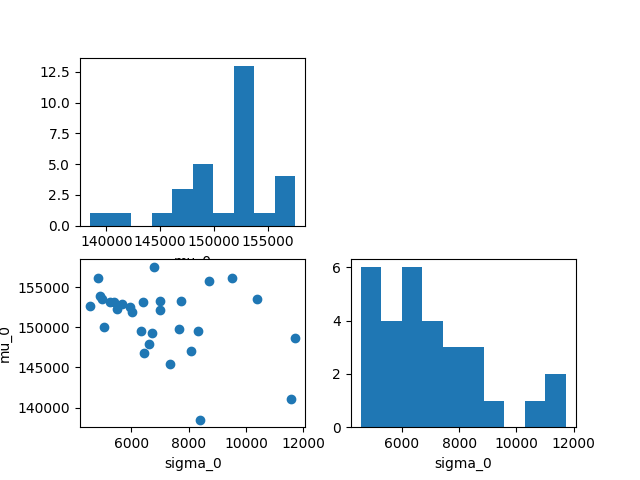
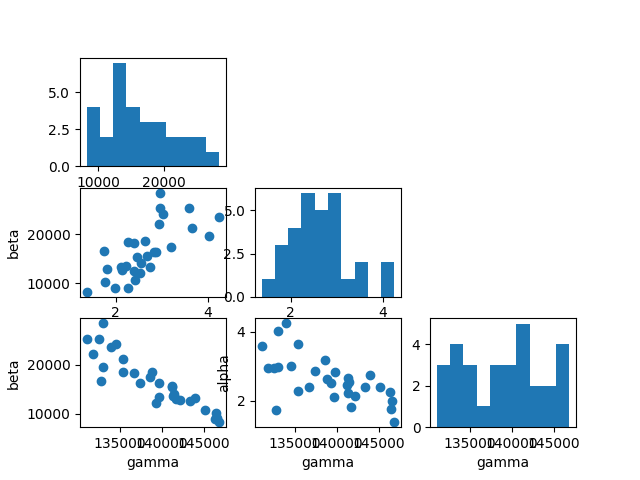
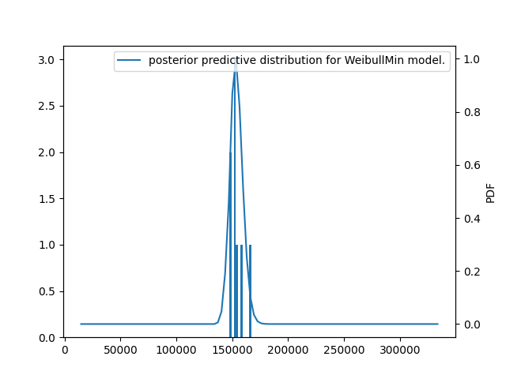
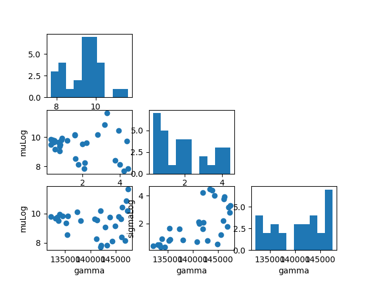
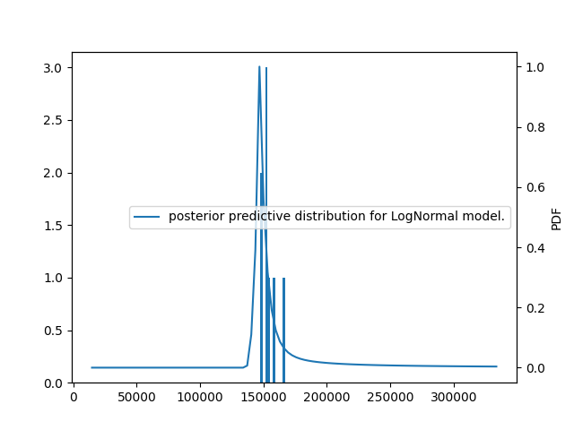
Out:
/home/sebastien.bocquet/PycharmProjects/vimseo/.tox/doc/lib/python3.11/site-packages/gemseo/utils/matplotlib_figure.py:59: UserWarning:
FigureCanvasAgg is non-interactive, and thus cannot be shown
The first conclusion that can be drawn from the plots of the posterior samples for each model is that that priors were elicited.
3) Validating models¶
We aim now to validate models. From the earlier posterior predictive plots, we can perform qualitative analyses. The posterior predictive distributions refer to predictions for all models averaged over all posterior samples. Though the predictions from all models are rather coherent with respect to the data, those from the Normal model are not as relevant as for the others. In particular, they are symmetric contrary to the data. It is harder to discriminate between the two other models using only visual plots.
# To continue the analyses,
# we study several numerical indicators,
# lppds and marginal likelihoods.
# We instanciate a class PosteriorChecks
# to analyze and summarize the results,
check_n = PosteriorChecks(analysis_n.result)
check_l = PosteriorChecks(analysis_l.result)
check_w = PosteriorChecks(analysis_w.result)
Aside from posterior predictive plots that are qualitative assessments, we can focus on quantitative metrics that will account in particular for the fact that the Weibull and Lognormal models have higher number of parameters.
print(check_n)
print(check_w)
print(check_l)
Out:
Bayesian verification indices for Normal model.
+--------------------+--------------------+
| lppd | ml |
+--------------------+--------------------+
| 165.79369091250697 | 168.47600815078906 |
+--------------------+--------------------+
Bayesian verification indices for WeibullMin model.
+--------------------+--------------------+
| lppd | ml |
+--------------------+--------------------+
| 164.25285475953092 | 165.90556644412786 |
+--------------------+--------------------+
Bayesian verification indices for LogNormal model.
+------------------+--------------------+
| lppd | ml |
+------------------+--------------------+
| 168.374756966733 | 175.02929357654367 |
+------------------+--------------------+
Consistently with earlier observations, the Weibull model seems to have the best predictive accuracy according to the lppd. The marginal likelihoods are harder to compare because the priors for the Weibull and Lognormal models have much wider support, penalizing thus heavily these models. It is interesting to notice that the ml for the Lognormal model in spite of a much wider support, has a better predictive accuracy sufficiently larger to compensate the difference from the priors.
4). The Weibull model and the Lognormal have 3 parameters instead of 2 for the Normal with the default parametrization of OpenTURNS distribution. We try to calibrate these two models by freezing some parameters, (the location parameter) which is carried out by indicating the frozen parameters and their associated values. ==================================
prior_weibull_b = ComposedDistribution([Uniform(50_000, 200_000), Uniform(1, 100)])
dict_frozen = {"frozen_index": [2], "frozen_values": [0]}
We can now sample as earlier the posterior distribution of the parameters of the new models.
analysis_w_b = BayesTool(working_directory="weibullmin_2_frozen")
analysis_w_b.execute(
likelihood_dist=Models.WEIBULL_MIN,
prior_dist=prior_weibull_b,
data=data_modulus,
n_mcmc=N_MCMC,
frozen_variables=dict_frozen,
)
analysis_w_b.save_results()
prior_lognormal_b = ComposedDistribution([Uniform(2, 20), Uniform(0.005, 0.5)])
analysis_l_b = BayesTool(working_directory="lognormal_2_frozen")
analysis_l_b.execute(
likelihood_dist=Models.LOG_NORMAL,
prior_dist=prior_lognormal_b,
data=data_modulus,
n_mcmc=N_MCMC,
frozen_variables=dict_frozen,
)
analysis_l_b.save_results()
Out:
/home/sebastien.bocquet/PycharmProjects/vimseo/.tox/doc/lib/python3.11/site-packages/pydantic/_internal/_generate_schema.py:547: UserWarning:
<module 'openturns.dist' from '/home/sebastien.bocquet/PycharmProjects/vimseo/.tox/doc/lib/python3.11/site-packages/openturns/dist.py'> is not a Python type (it may be an instance of an object), Pydantic will allow any object with no validation since we cannot even enforce that the input is an instance of the given type. To get rid of this error wrap the type with `pydantic.SkipValidation`.
/home/sebastien.bocquet/PycharmProjects/vimseo/.tox/doc/lib/python3.11/site-packages/pydantic/_internal/_generate_schema.py:547: UserWarning:
<built-in function array> is not a Python type (it may be an instance of an object), Pydantic will allow any object with no validation since we cannot even enforce that the input is an instance of the given type. To get rid of this error wrap the type with `pydantic.SkipValidation`.
INFO - 16:53:10: Working directory is /home/sebastien.bocquet/PycharmProjects/vimseo/docs/runnable_examples/12_bayesian_calibration/weibullmin_2_frozen
0%| | 0/100 [00:00<?, ?it/s]
27%|##7 | 27/100 [00:00<00:00, 261.37it/s]
58%|#####8 | 58/100 [00:00<00:00, 285.05it/s]
90%|######### | 90/100 [00:00<00:00, 297.19it/s]
100%|##########| 100/100 [00:00<00:00, 293.05it/s]
INFO - 16:53:11: Saving result to /home/sebastien.bocquet/PycharmProjects/vimseo/docs/runnable_examples/12_bayesian_calibration/weibullmin_2_frozen/BayesTool_result.hdf5
INFO - 16:53:11: PICKLE fallback: key='prior_dist', type=<class 'openturns.model_copula.ComposedDistribution'>, value=ComposedDistribution(Uniform(a = 50000, b = 200000), Uniform(a = 1, b = 100), IndependentCopula(dimension = 2))
INFO - 16:53:11: Working directory is /home/sebastien.bocquet/PycharmProjects/vimseo/docs/runnable_examples/12_bayesian_calibration/lognormal_2_frozen
0%| | 0/100 [00:00<?, ?it/s]
28%|##8 | 28/100 [00:00<00:00, 272.47it/s]
56%|#####6 | 56/100 [00:00<00:00, 87.91it/s]
86%|########6 | 86/100 [00:00<00:00, 131.25it/s]
100%|##########| 100/100 [00:00<00:00, 138.11it/s]
INFO - 16:53:11: Saving result to /home/sebastien.bocquet/PycharmProjects/vimseo/docs/runnable_examples/12_bayesian_calibration/lognormal_2_frozen/BayesTool_result.hdf5
INFO - 16:53:11: PICKLE fallback: key='prior_dist', type=<class 'openturns.model_copula.ComposedDistribution'>, value=ComposedDistribution(Uniform(a = 2, b = 20), Uniform(a = 0.005, b = 0.5), IndependentCopula(dimension = 2))
Then, we determine the burnin for each MCMC sampling:
analysis_w_b.plot_burnin(analysis_w_b.result, save=True, show=True)
analysis_l_b.plot_burnin(analysis_l_b.result, save=True, show=True)
# Finally,
# as earlier,
# we launch several
# post-processing analyses:
analysis_w_b.post(50)
# And the Log Normal model:
analysis_l_b.post(50)
Out:
/home/sebastien.bocquet/PycharmProjects/vimseo/.tox/doc/lib/python3.11/site-packages/gemseo/utils/matplotlib_figure.py:59: UserWarning:
FigureCanvasAgg is non-interactive, and thus cannot be shown
WARNING - 16:53:12: A minimum of posterior samples of samples is recommended to ensure convergence.
WARNING - 16:53:12: Make sure enough samples are generated to draw reliable conclusions from the criterion (at least 10000)
0%| | 0/1000 [00:00<?, ?it/s]
3%|2 | 29/1000 [00:00<00:03, 287.09it/s]
6%|5 | 58/1000 [00:00<00:03, 287.89it/s]
9%|8 | 87/1000 [00:00<00:03, 288.47it/s]
12%|#1 | 117/1000 [00:00<00:03, 290.56it/s]
15%|#4 | 147/1000 [00:00<00:07, 120.85it/s]
18%|#7 | 176/1000 [00:01<00:05, 149.70it/s]
21%|## | 206/1000 [00:01<00:04, 178.37it/s]
23%|##3 | 232/1000 [00:01<00:06, 111.36it/s]
26%|##6 | 262/1000 [00:01<00:05, 139.41it/s]
29%|##9 | 290/1000 [00:01<00:04, 162.98it/s]
32%|###1 | 317/1000 [00:01<00:03, 183.28it/s]
34%|###4 | 342/1000 [00:02<00:06, 107.82it/s]
37%|###7 | 371/1000 [00:02<00:04, 134.47it/s]
40%|#### | 400/1000 [00:02<00:03, 161.39it/s]
42%|####2 | 424/1000 [00:02<00:03, 144.46it/s]
45%|####5 | 453/1000 [00:02<00:03, 171.21it/s]
48%|####7 | 476/1000 [00:03<00:04, 107.80it/s]
50%|##### | 505/1000 [00:03<00:03, 134.70it/s]
53%|#####3 | 534/1000 [00:03<00:02, 161.15it/s]
56%|#####6 | 563/1000 [00:03<00:02, 186.77it/s]
59%|#####8 | 588/1000 [00:03<00:02, 151.33it/s]
61%|###### | 609/1000 [00:04<00:03, 114.32it/s]
63%|######3 | 634/1000 [00:04<00:02, 136.12it/s]
66%|######5 | 659/1000 [00:04<00:02, 156.39it/s]
68%|######8 | 684/1000 [00:04<00:01, 175.85it/s]
71%|####### | 706/1000 [00:04<00:02, 131.34it/s]
73%|#######3 | 732/1000 [00:04<00:01, 155.12it/s]
75%|#######5 | 752/1000 [00:05<00:03, 74.98it/s]
78%|#######8 | 781/1000 [00:05<00:02, 100.74it/s]
81%|######## | 809/1000 [00:05<00:01, 127.06it/s]
84%|########3 | 837/1000 [00:05<00:01, 153.22it/s]
86%|########6 | 861/1000 [00:06<00:01, 97.28it/s]
89%|########9 | 890/1000 [00:06<00:00, 123.96it/s]
92%|#########1| 918/1000 [00:06<00:00, 149.53it/s]
95%|#########4| 946/1000 [00:06<00:00, 174.07it/s]
97%|#########7| 973/1000 [00:06<00:00, 194.29it/s]
100%|##########| 1000/1000 [00:06<00:00, 146.98it/s]
0%| | 0/1000 [00:00<?, ?it/s]
2%|2 | 24/1000 [00:00<00:04, 235.97it/s]
5%|4 | 48/1000 [00:00<00:04, 230.91it/s]
8%|7 | 78/1000 [00:00<00:03, 259.82it/s]
11%|# | 108/1000 [00:00<00:03, 272.99it/s]
14%|#3 | 138/1000 [00:00<00:03, 281.15it/s]
17%|#6 | 167/1000 [00:01<00:08, 94.64it/s]
19%|#9 | 193/1000 [00:01<00:06, 117.33it/s]
22%|##2 | 223/1000 [00:01<00:05, 147.02it/s]
25%|##5 | 253/1000 [00:01<00:04, 175.15it/s]
28%|##7 | 279/1000 [00:02<00:06, 105.81it/s]
31%|### | 306/1000 [00:02<00:05, 128.85it/s]
34%|###3 | 336/1000 [00:02<00:04, 157.00it/s]
37%|###6 | 366/1000 [00:02<00:03, 183.85it/s]
39%|###9 | 392/1000 [00:02<00:05, 109.52it/s]
42%|####2 | 420/1000 [00:02<00:04, 133.48it/s]
45%|####4 | 446/1000 [00:02<00:03, 154.55it/s]
48%|####7 | 475/1000 [00:03<00:02, 180.47it/s]
50%|##### | 500/1000 [00:03<00:03, 147.78it/s]
52%|#####2 | 521/1000 [00:03<00:04, 112.28it/s]
54%|#####4 | 541/1000 [00:03<00:03, 126.32it/s]
56%|#####5 | 559/1000 [00:04<00:05, 84.44it/s]
59%|#####8 | 589/1000 [00:04<00:03, 114.55it/s]
62%|######1 | 619/1000 [00:04<00:02, 145.08it/s]
65%|######4 | 648/1000 [00:04<00:02, 172.42it/s]
67%|######7 | 672/1000 [00:04<00:02, 129.07it/s]
70%|####### | 702/1000 [00:04<00:01, 158.64it/s]
73%|#######2 | 727/1000 [00:05<00:01, 176.00it/s]
75%|#######5 | 750/1000 [00:05<00:01, 183.70it/s]
77%|#######7 | 773/1000 [00:05<00:01, 114.47it/s]
80%|######## | 803/1000 [00:05<00:01, 144.44it/s]
83%|########3 | 833/1000 [00:05<00:00, 173.14it/s]
86%|########5 | 857/1000 [00:06<00:01, 106.72it/s]
88%|########8 | 880/1000 [00:06<00:00, 124.67it/s]
91%|######### | 907/1000 [00:06<00:00, 149.01it/s]
93%|#########3| 934/1000 [00:06<00:00, 171.88it/s]
96%|#########6| 961/1000 [00:06<00:00, 104.56it/s]
99%|#########8| 987/1000 [00:07<00:00, 126.75it/s]
100%|##########| 1000/1000 [00:07<00:00, 140.17it/s]
0%| | 0/1000 [00:00<?, ?it/s]
2%|2 | 20/1000 [00:00<00:04, 196.10it/s]
4%|4 | 42/1000 [00:00<00:04, 207.33it/s]
7%|6 | 69/1000 [00:00<00:04, 231.95it/s]
9%|9 | 93/1000 [00:00<00:08, 105.24it/s]
11%|#1 | 110/1000 [00:01<00:11, 78.09it/s]
13%|#3 | 132/1000 [00:01<00:08, 100.44it/s]
15%|#5 | 154/1000 [00:01<00:06, 122.45it/s]
18%|#7 | 179/1000 [00:01<00:05, 148.84it/s]
20%|#9 | 199/1000 [00:01<00:09, 86.59it/s]
23%|##2 | 229/1000 [00:01<00:06, 118.55it/s]
26%|##5 | 259/1000 [00:02<00:04, 150.14it/s]
29%|##8 | 287/1000 [00:02<00:04, 176.07it/s]
32%|###1 | 317/1000 [00:02<00:03, 202.15it/s]
35%|###4 | 346/1000 [00:02<00:02, 223.01it/s]
37%|###7 | 373/1000 [00:03<00:06, 94.43it/s]
40%|#### | 404/1000 [00:03<00:04, 121.87it/s]
44%|####3 | 435/1000 [00:03<00:03, 150.00it/s]
46%|####6 | 464/1000 [00:03<00:03, 174.49it/s]
49%|####9 | 491/1000 [00:03<00:04, 108.06it/s]
52%|#####2 | 523/1000 [00:03<00:03, 137.06it/s]
55%|#####5 | 554/1000 [00:04<00:02, 165.18it/s]
58%|#####8 | 585/1000 [00:04<00:02, 191.98it/s]
61%|######1 | 612/1000 [00:04<00:04, 92.60it/s]
64%|######4 | 643/1000 [00:04<00:03, 118.37it/s]
67%|######7 | 674/1000 [00:05<00:02, 145.71it/s]
70%|####### | 705/1000 [00:05<00:01, 173.51it/s]
73%|#######3 | 732/1000 [00:05<00:02, 110.94it/s]
76%|#######6 | 761/1000 [00:05<00:01, 135.76it/s]
79%|#######9 | 791/1000 [00:05<00:01, 162.51it/s]
82%|########2 | 821/1000 [00:05<00:00, 187.92it/s]
85%|########5 | 850/1000 [00:06<00:01, 113.41it/s]
88%|########8 | 880/1000 [00:06<00:00, 139.74it/s]
91%|#########1| 911/1000 [00:06<00:00, 168.27it/s]
94%|#########4| 942/1000 [00:06<00:00, 195.45it/s]
97%|#########7| 971/1000 [00:07<00:00, 116.26it/s]
99%|#########9| 992/1000 [00:07<00:00, 128.22it/s]
100%|##########| 1000/1000 [00:07<00:00, 136.04it/s]
0%| | 0/1000 [00:00<?, ?it/s]
3%|3 | 31/1000 [00:00<00:03, 307.83it/s]
6%|6 | 62/1000 [00:00<00:03, 309.02it/s]
9%|9 | 93/1000 [00:00<00:02, 305.24it/s]
12%|#2 | 124/1000 [00:00<00:02, 306.05it/s]
16%|#5 | 155/1000 [00:01<00:08, 97.25it/s]
18%|#8 | 185/1000 [00:01<00:06, 125.44it/s]
22%|##1 | 215/1000 [00:01<00:05, 154.07it/s]
24%|##4 | 245/1000 [00:01<00:04, 181.52it/s]
27%|##7 | 273/1000 [00:01<00:06, 110.44it/s]
30%|### | 303/1000 [00:02<00:05, 136.95it/s]
33%|###3 | 333/1000 [00:02<00:04, 163.85it/s]
36%|###6 | 363/1000 [00:02<00:03, 189.83it/s]
39%|###9 | 390/1000 [00:02<00:04, 139.89it/s]
42%|####2 | 420/1000 [00:02<00:03, 166.75it/s]
44%|####4 | 444/1000 [00:03<00:05, 109.26it/s]
48%|####7 | 476/1000 [00:03<00:03, 139.39it/s]
51%|##### | 507/1000 [00:03<00:02, 168.44it/s]
54%|#####3 | 538/1000 [00:03<00:02, 195.86it/s]
56%|#####6 | 565/1000 [00:04<00:04, 92.90it/s]
60%|#####9 | 595/1000 [00:04<00:03, 117.78it/s]
63%|######2 | 626/1000 [00:04<00:02, 145.36it/s]
66%|######5 | 657/1000 [00:04<00:01, 172.93it/s]
68%|######8 | 684/1000 [00:05<00:03, 89.21it/s]
71%|#######1 | 714/1000 [00:05<00:02, 113.46it/s]
74%|#######4 | 744/1000 [00:05<00:01, 139.87it/s]
77%|#######7 | 774/1000 [00:05<00:01, 166.79it/s]
80%|######## | 802/1000 [00:05<00:01, 188.61it/s]
83%|########3 | 833/1000 [00:05<00:00, 213.81it/s]
86%|########6 | 862/1000 [00:05<00:01, 128.12it/s]
89%|########9 | 892/1000 [00:06<00:00, 154.67it/s]
92%|#########2| 922/1000 [00:06<00:00, 180.84it/s]
95%|#########5| 952/1000 [00:06<00:00, 204.94it/s]
98%|#########8| 981/1000 [00:06<00:00, 127.12it/s]
100%|##########| 1000/1000 [00:07<00:00, 140.81it/s]
0%| | 0/1000 [00:00<?, ?it/s]
3%|3 | 30/1000 [00:00<00:03, 296.64it/s]
6%|6 | 61/1000 [00:00<00:03, 299.74it/s]
9%|9 | 91/1000 [00:00<00:03, 299.04it/s]
12%|#2 | 121/1000 [00:00<00:07, 117.66it/s]
15%|#5 | 152/1000 [00:00<00:05, 151.64it/s]
18%|#8 | 182/1000 [00:01<00:04, 181.61it/s]
21%|##1 | 212/1000 [00:01<00:03, 208.13it/s]
24%|##4 | 240/1000 [00:01<00:06, 116.62it/s]
27%|##6 | 268/1000 [00:01<00:05, 141.33it/s]
30%|##9 | 299/1000 [00:01<00:04, 171.37it/s]
33%|###3 | 330/1000 [00:01<00:03, 198.50it/s]
36%|###5 | 357/1000 [00:02<00:05, 116.03it/s]
39%|###8 | 387/1000 [00:02<00:04, 143.15it/s]
42%|####1 | 417/1000 [00:02<00:03, 169.88it/s]
45%|####4 | 447/1000 [00:02<00:02, 194.94it/s]
47%|####7 | 474/1000 [00:03<00:04, 115.02it/s]
50%|##### | 504/1000 [00:03<00:03, 141.88it/s]
53%|#####3 | 534/1000 [00:03<00:02, 168.53it/s]
56%|#####6 | 564/1000 [00:03<00:02, 194.13it/s]
59%|#####9 | 591/1000 [00:03<00:03, 115.08it/s]
62%|######2 | 623/1000 [00:04<00:02, 144.37it/s]
65%|######5 | 654/1000 [00:04<00:02, 172.57it/s]
68%|######8 | 685/1000 [00:04<00:01, 199.52it/s]
71%|#######1 | 713/1000 [00:04<00:02, 117.46it/s]
74%|#######4 | 744/1000 [00:04<00:01, 145.32it/s]
78%|#######7 | 775/1000 [00:04<00:01, 173.35it/s]
81%|######## | 806/1000 [00:05<00:00, 199.67it/s]
83%|########3 | 834/1000 [00:05<00:01, 117.33it/s]
86%|########6 | 865/1000 [00:05<00:00, 144.67it/s]
90%|########9 | 896/1000 [00:05<00:00, 172.06it/s]
92%|#########2| 922/1000 [00:06<00:00, 118.13it/s]
95%|#########5| 952/1000 [00:06<00:00, 145.00it/s]
98%|#########7| 977/1000 [00:06<00:00, 98.28it/s]
100%|##########| 1000/1000 [00:06<00:00, 147.16it/s]
0%| | 0/1000 [00:00<?, ?it/s]
3%|3 | 30/1000 [00:00<00:03, 291.51it/s]
6%|6 | 60/1000 [00:00<00:03, 291.92it/s]
9%|9 | 90/1000 [00:00<00:03, 290.77it/s]
12%|#2 | 120/1000 [00:00<00:03, 290.48it/s]
15%|#5 | 150/1000 [00:00<00:06, 122.02it/s]
18%|#8 | 180/1000 [00:01<00:05, 152.21it/s]
21%|##1 | 210/1000 [00:01<00:04, 180.60it/s]
24%|##4 | 240/1000 [00:01<00:03, 205.66it/s]
27%|##6 | 267/1000 [00:01<00:06, 114.93it/s]
30%|##9 | 297/1000 [00:01<00:04, 142.30it/s]
33%|###2 | 327/1000 [00:01<00:03, 169.39it/s]
35%|###5 | 352/1000 [00:02<00:05, 113.17it/s]
38%|###8 | 381/1000 [00:02<00:04, 139.44it/s]
41%|####1 | 411/1000 [00:02<00:03, 166.70it/s]
44%|####4 | 441/1000 [00:02<00:02, 192.30it/s]
47%|####6 | 467/1000 [00:03<00:04, 108.04it/s]
50%|####9 | 496/1000 [00:03<00:03, 133.56it/s]
52%|#####2 | 525/1000 [00:03<00:02, 159.73it/s]
55%|#####5 | 550/1000 [00:03<00:04, 111.31it/s]
58%|#####7 | 579/1000 [00:03<00:03, 137.54it/s]
61%|###### | 609/1000 [00:03<00:02, 165.01it/s]
64%|######3 | 639/1000 [00:04<00:01, 190.99it/s]
66%|######6 | 665/1000 [00:04<00:02, 112.62it/s]
70%|######9 | 695/1000 [00:04<00:02, 139.66it/s]
72%|#######2 | 725/1000 [00:04<00:01, 166.78it/s]
76%|#######5 | 755/1000 [00:04<00:01, 192.65it/s]
78%|#######8 | 782/1000 [00:05<00:01, 113.09it/s]
81%|########1 | 812/1000 [00:05<00:01, 139.57it/s]
84%|########4 | 842/1000 [00:05<00:00, 166.05it/s]
87%|########6 | 867/1000 [00:05<00:01, 118.01it/s]
90%|########9 | 897/1000 [00:06<00:00, 145.57it/s]
93%|#########2| 927/1000 [00:06<00:00, 172.64it/s]
96%|#########5| 957/1000 [00:06<00:00, 197.76it/s]
98%|#########8| 983/1000 [00:06<00:00, 111.35it/s]
100%|##########| 1000/1000 [00:06<00:00, 147.34it/s]
0%| | 0/1000 [00:00<?, ?it/s]
3%|3 | 30/1000 [00:00<00:03, 291.87it/s]
6%|6 | 60/1000 [00:00<00:03, 293.42it/s]
9%|9 | 90/1000 [00:00<00:08, 106.46it/s]
12%|#2 | 120/1000 [00:00<00:06, 142.10it/s]
15%|#5 | 150/1000 [00:00<00:04, 174.45it/s]
18%|#8 | 180/1000 [00:01<00:04, 202.62it/s]
21%|## | 207/1000 [00:01<00:07, 106.89it/s]
24%|##3 | 237/1000 [00:01<00:05, 135.02it/s]
26%|##6 | 260/1000 [00:02<00:07, 92.89it/s]
29%|##9 | 290/1000 [00:02<00:05, 119.90it/s]
32%|###2 | 320/1000 [00:02<00:04, 147.86it/s]
35%|###5 | 350/1000 [00:02<00:03, 175.04it/s]
38%|###7 | 376/1000 [00:02<00:05, 108.30it/s]
41%|#### | 406/1000 [00:02<00:04, 135.29it/s]
44%|####3 | 436/1000 [00:03<00:03, 162.47it/s]
47%|####6 | 466/1000 [00:03<00:02, 188.56it/s]
49%|####9 | 493/1000 [00:03<00:03, 139.19it/s]
51%|#####1 | 514/1000 [00:03<00:03, 150.05it/s]
54%|#####4 | 544/1000 [00:03<00:02, 179.16it/s]
57%|#####7 | 574/1000 [00:03<00:02, 205.36it/s]
60%|###### | 602/1000 [00:04<00:03, 121.44it/s]
63%|######3 | 632/1000 [00:04<00:02, 148.87it/s]
66%|######6 | 662/1000 [00:04<00:03, 102.22it/s]
69%|######9 | 692/1000 [00:04<00:02, 127.89it/s]
72%|#######2 | 722/1000 [00:05<00:01, 154.73it/s]
75%|#######5 | 752/1000 [00:05<00:01, 181.04it/s]
78%|#######8 | 781/1000 [00:05<00:01, 111.72it/s]
81%|########1 | 811/1000 [00:05<00:01, 137.34it/s]
84%|########3 | 838/1000 [00:05<00:01, 159.14it/s]
86%|########6 | 865/1000 [00:05<00:00, 180.10it/s]
89%|########9 | 893/1000 [00:06<00:00, 200.63it/s]
92%|#########1| 919/1000 [00:06<00:00, 121.38it/s]
95%|#########4| 947/1000 [00:06<00:00, 145.89it/s]
98%|#########7| 975/1000 [00:06<00:00, 169.55it/s]
100%|#########9| 999/1000 [00:07<00:00, 111.20it/s]
100%|##########| 1000/1000 [00:07<00:00, 140.25it/s]
0%| | 0/1000 [00:00<?, ?it/s]
3%|2 | 29/1000 [00:00<00:03, 281.38it/s]
6%|5 | 58/1000 [00:00<00:03, 272.50it/s]
9%|8 | 86/1000 [00:00<00:07, 128.28it/s]
12%|#1 | 115/1000 [00:00<00:05, 164.39it/s]
14%|#3 | 138/1000 [00:00<00:07, 121.93it/s]
16%|#5 | 156/1000 [00:01<00:11, 72.04it/s]
18%|#8 | 184/1000 [00:01<00:08, 98.73it/s]
21%|## | 209/1000 [00:01<00:06, 122.15it/s]
23%|##3 | 233/1000 [00:01<00:05, 142.99it/s]
26%|##5 | 256/1000 [00:01<00:04, 160.70it/s]
28%|##8 | 282/1000 [00:02<00:03, 182.99it/s]
31%|### | 307/1000 [00:02<00:05, 128.76it/s]
33%|###2 | 326/1000 [00:02<00:06, 112.19it/s]
36%|###5 | 356/1000 [00:02<00:04, 144.53it/s]
38%|###8 | 380/1000 [00:03<00:06, 97.97it/s]
41%|####1 | 411/1000 [00:03<00:04, 128.36it/s]
44%|####4 | 442/1000 [00:03<00:03, 159.13it/s]
47%|####7 | 473/1000 [00:03<00:02, 188.26it/s]
50%|##### | 501/1000 [00:03<00:04, 112.49it/s]
53%|#####3 | 532/1000 [00:04<00:03, 140.71it/s]
56%|#####6 | 563/1000 [00:04<00:02, 169.04it/s]
59%|#####9 | 594/1000 [00:04<00:02, 195.74it/s]
62%|######2 | 623/1000 [00:04<00:03, 116.70it/s]
64%|######4 | 644/1000 [00:04<00:03, 104.72it/s]
68%|######7 | 676/1000 [00:05<00:02, 134.94it/s]
71%|####### | 707/1000 [00:05<00:01, 164.30it/s]
74%|#######3 | 739/1000 [00:05<00:01, 193.59it/s]
77%|#######6 | 766/1000 [00:05<00:02, 114.28it/s]
80%|#######9 | 797/1000 [00:05<00:01, 142.06it/s]
83%|########2 | 828/1000 [00:05<00:01, 169.86it/s]
86%|########5 | 859/1000 [00:06<00:00, 196.18it/s]
89%|########8 | 886/1000 [00:06<00:00, 150.02it/s]
92%|#########1| 917/1000 [00:06<00:00, 178.33it/s]
94%|#########4| 942/1000 [00:06<00:00, 111.29it/s]
97%|#########7| 973/1000 [00:07<00:00, 139.51it/s]
100%|##########| 1000/1000 [00:07<00:00, 140.48it/s]
WARNING - 16:54:09: Make sure enough samples are generated to draw reliable conclusions from the criterion (at least 10000)
WARNING - 16:54:12: A minimum of posterior samples of samples is recommended to ensure convergence.
WARNING - 16:54:12: Make sure enough samples are generated to draw reliable conclusions from the criterion (at least 10000)
0%| | 0/1000 [00:00<?, ?it/s]
3%|3 | 31/1000 [00:00<00:03, 307.73it/s]
6%|6 | 62/1000 [00:00<00:03, 307.14it/s]
9%|9 | 94/1000 [00:00<00:02, 311.69it/s]
13%|#2 | 126/1000 [00:00<00:02, 313.54it/s]
16%|#5 | 158/1000 [00:00<00:02, 312.52it/s]
19%|#9 | 190/1000 [00:00<00:02, 311.64it/s]
22%|##2 | 222/1000 [00:00<00:02, 308.65it/s]
25%|##5 | 253/1000 [00:00<00:02, 309.02it/s]
28%|##8 | 285/1000 [00:00<00:02, 309.78it/s]
32%|###1 | 317/1000 [00:01<00:02, 310.18it/s]
35%|###4 | 349/1000 [00:01<00:02, 310.73it/s]
38%|###8 | 381/1000 [00:01<00:01, 309.64it/s]
41%|####1 | 412/1000 [00:01<00:01, 309.31it/s]
44%|####4 | 443/1000 [00:01<00:01, 308.48it/s]
47%|####7 | 474/1000 [00:01<00:01, 303.12it/s]
50%|##### | 505/1000 [00:01<00:03, 147.79it/s]
54%|#####3 | 536/1000 [00:02<00:02, 174.42it/s]
57%|#####6 | 566/1000 [00:02<00:02, 198.66it/s]
60%|#####9 | 597/1000 [00:02<00:01, 221.31it/s]
62%|######2 | 625/1000 [00:02<00:03, 123.44it/s]
66%|######5 | 656/1000 [00:02<00:02, 150.71it/s]
69%|######8 | 687/1000 [00:02<00:01, 177.77it/s]
72%|#######1 | 718/1000 [00:03<00:01, 202.85it/s]
74%|#######4 | 745/1000 [00:03<00:02, 116.88it/s]
78%|#######7 | 777/1000 [00:03<00:01, 145.76it/s]
81%|######## | 808/1000 [00:03<00:01, 173.54it/s]
84%|########4 | 840/1000 [00:03<00:00, 201.61it/s]
87%|########7 | 870/1000 [00:04<00:01, 121.76it/s]
90%|######### | 901/1000 [00:04<00:00, 148.96it/s]
93%|#########3| 932/1000 [00:04<00:00, 175.78it/s]
96%|#########5| 958/1000 [00:05<00:00, 110.66it/s]
99%|#########8| 989/1000 [00:05<00:00, 137.91it/s]
100%|##########| 1000/1000 [00:05<00:00, 192.53it/s]
0%| | 0/1000 [00:00<?, ?it/s]
3%|2 | 28/1000 [00:00<00:03, 279.00it/s]
6%|5 | 58/1000 [00:00<00:04, 189.91it/s]
8%|7 | 79/1000 [00:00<00:08, 109.90it/s]
11%|#1 | 110/1000 [00:00<00:05, 153.67it/s]
14%|#4 | 141/1000 [00:00<00:04, 190.06it/s]
17%|#6 | 168/1000 [00:00<00:03, 209.75it/s]
20%|#9 | 197/1000 [00:01<00:03, 230.38it/s]
22%|##2 | 225/1000 [00:01<00:03, 242.28it/s]
25%|##5 | 252/1000 [00:01<00:06, 120.01it/s]
28%|##8 | 280/1000 [00:01<00:04, 145.35it/s]
30%|### | 303/1000 [00:02<00:07, 98.23it/s]
33%|###3 | 331/1000 [00:02<00:05, 123.37it/s]
36%|###5 | 359/1000 [00:02<00:04, 148.53it/s]
39%|###8 | 387/1000 [00:02<00:03, 173.32it/s]
41%|####1 | 413/1000 [00:02<00:05, 103.89it/s]
44%|####3 | 439/1000 [00:03<00:04, 125.84it/s]
47%|####6 | 466/1000 [00:03<00:03, 149.62it/s]
49%|####8 | 489/1000 [00:03<00:06, 82.94it/s]
52%|#####1 | 518/1000 [00:03<00:04, 107.73it/s]
55%|#####4 | 546/1000 [00:03<00:03, 132.72it/s]
57%|#####7 | 573/1000 [00:04<00:02, 156.17it/s]
60%|#####9 | 597/1000 [00:04<00:04, 98.77it/s]
62%|######2 | 625/1000 [00:04<00:03, 123.91it/s]
65%|######5 | 653/1000 [00:04<00:02, 149.64it/s]
68%|######8 | 682/1000 [00:04<00:01, 175.30it/s]
71%|####### | 708/1000 [00:05<00:02, 105.19it/s]
74%|#######3 | 736/1000 [00:05<00:02, 130.03it/s]
76%|#######6 | 764/1000 [00:05<00:01, 154.80it/s]
79%|#######8 | 789/1000 [00:05<00:01, 172.57it/s]
82%|########1 | 817/1000 [00:06<00:01, 105.45it/s]
85%|########4 | 846/1000 [00:06<00:01, 131.38it/s]
87%|########7 | 874/1000 [00:06<00:00, 156.29it/s]
90%|######### | 903/1000 [00:06<00:00, 181.31it/s]
93%|#########3| 932/1000 [00:06<00:00, 110.53it/s]
96%|#########5| 959/1000 [00:07<00:00, 132.83it/s]
98%|#########8| 984/1000 [00:07<00:00, 151.84it/s]
100%|##########| 1000/1000 [00:07<00:00, 138.47it/s]
0%| | 0/1000 [00:00<?, ?it/s]
3%|2 | 28/1000 [00:00<00:03, 273.56it/s]
6%|5 | 56/1000 [00:00<00:03, 274.82it/s]
8%|8 | 85/1000 [00:00<00:03, 278.93it/s]
11%|#1 | 113/1000 [00:00<00:06, 144.56it/s]
14%|#4 | 142/1000 [00:00<00:04, 176.20it/s]
17%|#7 | 170/1000 [00:00<00:04, 200.77it/s]
20%|#9 | 198/1000 [00:00<00:03, 220.03it/s]
22%|##2 | 224/1000 [00:01<00:06, 112.98it/s]
25%|##5 | 251/1000 [00:01<00:05, 137.01it/s]
28%|##7 | 276/1000 [00:01<00:04, 156.63it/s]
30%|### | 302/1000 [00:01<00:05, 118.49it/s]
33%|###3 | 330/1000 [00:02<00:04, 144.14it/s]
36%|###5 | 358/1000 [00:02<00:03, 169.66it/s]
39%|###8 | 386/1000 [00:02<00:03, 192.70it/s]
41%|####1 | 411/1000 [00:02<00:04, 124.03it/s]
43%|####3 | 430/1000 [00:03<00:06, 92.92it/s]
46%|####5 | 455/1000 [00:03<00:04, 114.65it/s]
48%|####8 | 482/1000 [00:03<00:03, 139.37it/s]
50%|##### | 503/1000 [00:03<00:03, 150.64it/s]
52%|#####2 | 523/1000 [00:03<00:05, 89.35it/s]
55%|#####5 | 552/1000 [00:03<00:03, 117.80it/s]
58%|#####8 | 580/1000 [00:04<00:02, 144.74it/s]
61%|###### | 609/1000 [00:04<00:02, 172.41it/s]
63%|######3 | 633/1000 [00:04<00:03, 104.12it/s]
66%|######6 | 664/1000 [00:04<00:02, 133.88it/s]
69%|######9 | 694/1000 [00:04<00:01, 162.57it/s]
72%|#######2 | 725/1000 [00:04<00:01, 190.64it/s]
75%|#######5 | 751/1000 [00:05<00:02, 90.87it/s]
78%|#######8 | 782/1000 [00:05<00:01, 117.20it/s]
81%|########1 | 813/1000 [00:05<00:01, 145.06it/s]
84%|########4 | 844/1000 [00:05<00:00, 172.77it/s]
87%|########7 | 871/1000 [00:06<00:00, 191.87it/s]
90%|########9 | 899/1000 [00:06<00:00, 211.13it/s]
93%|#########2| 926/1000 [00:06<00:00, 92.91it/s]
95%|#########5| 954/1000 [00:06<00:00, 115.55it/s]
98%|#########8| 982/1000 [00:07<00:00, 139.73it/s]
100%|##########| 1000/1000 [00:07<00:00, 141.27it/s]
0%| | 0/1000 [00:00<?, ?it/s]
3%|2 | 27/1000 [00:00<00:03, 262.44it/s]
6%|5 | 55/1000 [00:00<00:03, 269.04it/s]
8%|8 | 82/1000 [00:00<00:09, 97.99it/s]
11%|#1 | 112/1000 [00:00<00:06, 135.46it/s]
14%|#4 | 140/1000 [00:00<00:05, 165.85it/s]
17%|#6 | 169/1000 [00:00<00:04, 194.64it/s]
20%|#9 | 195/1000 [00:01<00:09, 85.79it/s]
22%|##2 | 225/1000 [00:01<00:06, 112.79it/s]
25%|##5 | 253/1000 [00:01<00:05, 137.70it/s]
28%|##8 | 284/1000 [00:01<00:04, 168.02it/s]
31%|###1 | 312/1000 [00:02<00:04, 151.07it/s]
34%|###4 | 342/1000 [00:02<00:03, 178.40it/s]
37%|###7 | 372/1000 [00:02<00:03, 203.69it/s]
40%|###9 | 398/1000 [00:03<00:06, 92.55it/s]
43%|####2 | 428/1000 [00:03<00:04, 117.59it/s]
46%|####5 | 458/1000 [00:03<00:03, 144.08it/s]
49%|####8 | 488/1000 [00:03<00:02, 170.89it/s]
51%|#####1 | 514/1000 [00:03<00:04, 107.52it/s]
54%|#####4 | 544/1000 [00:03<00:03, 134.08it/s]
57%|#####7 | 574/1000 [00:04<00:02, 161.19it/s]
60%|###### | 604/1000 [00:04<00:02, 186.67it/s]
63%|######3 | 631/1000 [00:04<00:03, 111.40it/s]
66%|######6 | 661/1000 [00:04<00:02, 138.03it/s]
69%|######9 | 691/1000 [00:04<00:01, 164.89it/s]
72%|#######2 | 721/1000 [00:04<00:01, 190.76it/s]
75%|#######4 | 748/1000 [00:05<00:02, 112.97it/s]
78%|#######7 | 778/1000 [00:05<00:01, 139.81it/s]
81%|######## | 808/1000 [00:05<00:01, 166.92it/s]
84%|########3 | 838/1000 [00:05<00:00, 192.57it/s]
87%|########6 | 866/1000 [00:06<00:01, 114.13it/s]
89%|########9 | 893/1000 [00:06<00:00, 136.38it/s]
92%|#########2| 923/1000 [00:06<00:00, 163.82it/s]
95%|#########5| 953/1000 [00:06<00:00, 189.95it/s]
98%|#########8| 982/1000 [00:06<00:00, 210.73it/s]
100%|##########| 1000/1000 [00:07<00:00, 140.29it/s]
0%| | 0/1000 [00:00<?, ?it/s]
3%|3 | 30/1000 [00:00<00:03, 297.94it/s]
6%|6 | 60/1000 [00:00<00:03, 298.33it/s]
9%|9 | 91/1000 [00:00<00:03, 302.32it/s]
12%|#2 | 122/1000 [00:00<00:07, 120.81it/s]
15%|#5 | 153/1000 [00:00<00:05, 154.58it/s]
18%|#8 | 184/1000 [00:00<00:04, 185.81it/s]
22%|##1 | 215/1000 [00:01<00:03, 213.04it/s]
24%|##4 | 243/1000 [00:01<00:06, 109.87it/s]
27%|##7 | 274/1000 [00:01<00:05, 137.91it/s]
30%|### | 305/1000 [00:01<00:04, 166.19it/s]
33%|###3 | 331/1000 [00:02<00:06, 105.81it/s]
36%|###6 | 361/1000 [00:02<00:04, 132.39it/s]
39%|###9 | 391/1000 [00:02<00:03, 159.77it/s]
42%|####2 | 422/1000 [00:02<00:03, 187.26it/s]
45%|####4 | 449/1000 [00:03<00:04, 112.58it/s]
48%|####7 | 479/1000 [00:03<00:03, 139.13it/s]
51%|##### | 509/1000 [00:03<00:02, 166.17it/s]
54%|#####3 | 539/1000 [00:03<00:02, 192.14it/s]
57%|#####6 | 569/1000 [00:03<00:01, 215.51it/s]
60%|#####9 | 597/1000 [00:03<00:03, 122.71it/s]
63%|######2 | 627/1000 [00:04<00:02, 149.49it/s]
66%|######5 | 656/1000 [00:04<00:01, 173.28it/s]
68%|######8 | 681/1000 [00:04<00:02, 117.49it/s]
71%|#######1 | 710/1000 [00:04<00:02, 143.00it/s]
74%|#######3 | 735/1000 [00:04<00:01, 161.61it/s]
76%|#######6 | 763/1000 [00:04<00:01, 185.09it/s]
79%|#######8 | 788/1000 [00:05<00:02, 89.37it/s]
81%|########1 | 813/1000 [00:05<00:01, 109.09it/s]
84%|########3 | 839/1000 [00:05<00:01, 131.86it/s]
87%|########6 | 869/1000 [00:05<00:00, 161.64it/s]
90%|######### | 900/1000 [00:05<00:00, 191.12it/s]
93%|#########3| 931/1000 [00:06<00:00, 217.01it/s]
96%|#########5| 959/1000 [00:06<00:00, 120.62it/s]
99%|#########9| 990/1000 [00:06<00:00, 149.23it/s]
100%|##########| 1000/1000 [00:06<00:00, 149.67it/s]
0%| | 0/1000 [00:00<?, ?it/s]
3%|3 | 31/1000 [00:00<00:03, 304.67it/s]
6%|6 | 62/1000 [00:00<00:03, 305.42it/s]
9%|9 | 93/1000 [00:00<00:10, 83.64it/s]
12%|#2 | 124/1000 [00:00<00:07, 117.49it/s]
16%|#5 | 155/1000 [00:01<00:05, 150.86it/s]
19%|#8 | 186/1000 [00:01<00:04, 181.99it/s]
21%|##1 | 214/1000 [00:01<00:07, 110.03it/s]
24%|##4 | 245/1000 [00:01<00:05, 138.61it/s]
28%|##7 | 275/1000 [00:01<00:04, 166.00it/s]
31%|### | 306/1000 [00:01<00:03, 193.21it/s]
34%|###3 | 336/1000 [00:02<00:03, 216.17it/s]
37%|###6 | 366/1000 [00:02<00:02, 235.70it/s]
40%|###9 | 395/1000 [00:02<00:04, 125.67it/s]
43%|####2 | 426/1000 [00:02<00:03, 153.47it/s]
46%|####5 | 455/1000 [00:03<00:04, 112.77it/s]
49%|####8 | 486/1000 [00:03<00:03, 139.93it/s]
52%|#####1 | 517/1000 [00:03<00:02, 167.43it/s]
54%|#####4 | 542/1000 [00:03<00:04, 112.28it/s]
57%|#####7 | 573/1000 [00:03<00:03, 140.02it/s]
60%|###### | 604/1000 [00:04<00:02, 168.23it/s]
64%|######3 | 635/1000 [00:04<00:01, 194.87it/s]
66%|######6 | 662/1000 [00:04<00:02, 115.03it/s]
69%|######9 | 694/1000 [00:04<00:02, 144.14it/s]
72%|#######2 | 722/1000 [00:04<00:01, 166.45it/s]
75%|#######4 | 747/1000 [00:05<00:02, 114.35it/s]
78%|#######7 | 778/1000 [00:05<00:01, 143.02it/s]
81%|######## | 808/1000 [00:05<00:01, 170.39it/s]
83%|########3 | 834/1000 [00:05<00:00, 188.04it/s]
86%|########6 | 860/1000 [00:06<00:01, 111.28it/s]
89%|########9 | 892/1000 [00:06<00:00, 141.45it/s]
92%|#########2| 923/1000 [00:06<00:00, 170.01it/s]
95%|#########5| 954/1000 [00:06<00:00, 197.27it/s]
98%|#########8| 981/1000 [00:06<00:00, 115.63it/s]
100%|##########| 1000/1000 [00:06<00:00, 145.42it/s]
0%| | 0/1000 [00:00<?, ?it/s]
3%|3 | 30/1000 [00:00<00:03, 294.13it/s]
6%|6 | 61/1000 [00:00<00:03, 297.93it/s]
9%|9 | 92/1000 [00:00<00:03, 302.49it/s]
12%|#2 | 123/1000 [00:00<00:07, 122.09it/s]
15%|#5 | 154/1000 [00:00<00:05, 155.63it/s]
18%|#7 | 179/1000 [00:01<00:05, 138.12it/s]
21%|## | 209/1000 [00:01<00:04, 168.44it/s]
24%|##3 | 239/1000 [00:01<00:03, 196.29it/s]
26%|##6 | 265/1000 [00:01<00:06, 117.52it/s]
30%|##9 | 296/1000 [00:01<00:04, 147.01it/s]
33%|###2 | 327/1000 [00:01<00:03, 175.83it/s]
36%|###5 | 358/1000 [00:02<00:03, 202.00it/s]
38%|###8 | 385/1000 [00:02<00:05, 116.56it/s]
41%|####1 | 414/1000 [00:02<00:04, 141.96it/s]
44%|####4 | 440/1000 [00:03<00:05, 101.73it/s]
47%|####6 | 470/1000 [00:03<00:04, 128.24it/s]
50%|##### | 500/1000 [00:03<00:03, 155.80it/s]
53%|#####3 | 531/1000 [00:03<00:02, 183.71it/s]
56%|#####6 | 562/1000 [00:04<00:02, 209.27it/s]
59%|#####8 | 590/1000 [00:04<00:04, 96.46it/s]
62%|######2 | 621/1000 [00:04<00:03, 122.38it/s]
65%|######5 | 652/1000 [00:04<00:02, 150.03it/s]
68%|######8 | 683/1000 [00:04<00:01, 177.67it/s]
71%|#######1 | 710/1000 [00:04<00:02, 109.34it/s]
74%|#######4 | 741/1000 [00:05<00:01, 136.73it/s]
77%|#######7 | 772/1000 [00:05<00:01, 164.44it/s]
80%|######## | 803/1000 [00:05<00:01, 190.88it/s]
83%|########2 | 830/1000 [00:05<00:01, 115.23it/s]
86%|########6 | 861/1000 [00:05<00:00, 142.57it/s]
89%|########9 | 892/1000 [00:05<00:00, 170.32it/s]
92%|#########2| 923/1000 [00:06<00:00, 196.33it/s]
95%|#########5| 950/1000 [00:06<00:00, 114.09it/s]
98%|#########7| 977/1000 [00:06<00:00, 135.68it/s]
100%|##########| 1000/1000 [00:06<00:00, 147.60it/s]
0%| | 0/1000 [00:00<?, ?it/s]
3%|3 | 30/1000 [00:00<00:03, 293.07it/s]
6%|6 | 60/1000 [00:00<00:03, 295.03it/s]
9%|9 | 91/1000 [00:00<00:03, 300.64it/s]
12%|#2 | 122/1000 [00:00<00:07, 116.06it/s]
15%|#5 | 154/1000 [00:00<00:05, 151.27it/s]
18%|#8 | 185/1000 [00:01<00:04, 182.62it/s]
22%|##1 | 216/1000 [00:01<00:03, 209.89it/s]
24%|##4 | 244/1000 [00:01<00:06, 114.56it/s]
27%|##7 | 273/1000 [00:01<00:05, 139.86it/s]
30%|##9 | 298/1000 [00:01<00:04, 158.93it/s]
33%|###2 | 327/1000 [00:01<00:03, 183.74it/s]
36%|###5 | 358/1000 [00:02<00:03, 210.82it/s]
39%|###8 | 389/1000 [00:02<00:02, 233.78it/s]
42%|####1 | 417/1000 [00:02<00:04, 126.00it/s]
45%|####4 | 446/1000 [00:02<00:03, 150.62it/s]
48%|####7 | 475/1000 [00:02<00:03, 174.89it/s]
50%|##### | 501/1000 [00:02<00:02, 191.15it/s]
53%|#####2 | 526/1000 [00:03<00:05, 88.79it/s]
56%|#####5 | 556/1000 [00:03<00:03, 114.27it/s]
58%|#####8 | 581/1000 [00:03<00:03, 133.69it/s]
61%|###### | 606/1000 [00:03<00:02, 153.09it/s]
63%|######2 | 629/1000 [00:04<00:04, 92.16it/s]
65%|######5 | 653/1000 [00:04<00:03, 111.88it/s]
68%|######8 | 680/1000 [00:04<00:02, 136.74it/s]
71%|####### | 707/1000 [00:04<00:01, 161.12it/s]
73%|#######3 | 730/1000 [00:05<00:02, 97.62it/s]
76%|#######5 | 758/1000 [00:05<00:01, 123.49it/s]
78%|#######8 | 782/1000 [00:05<00:02, 88.56it/s]
81%|######## | 809/1000 [00:05<00:01, 112.15it/s]
84%|########3 | 837/1000 [00:05<00:01, 138.07it/s]
86%|########6 | 864/1000 [00:06<00:00, 161.62it/s]
89%|########8 | 888/1000 [00:06<00:00, 113.20it/s]
91%|#########1| 913/1000 [00:06<00:00, 134.33it/s]
94%|#########4| 941/1000 [00:06<00:00, 160.07it/s]
97%|#########6| 968/1000 [00:06<00:00, 182.41it/s]
99%|#########9| 992/1000 [00:07<00:00, 102.36it/s]
100%|##########| 1000/1000 [00:07<00:00, 136.95it/s]
WARNING - 16:55:07: Make sure enough samples are generated to draw reliable conclusions from the criterion (at least 10000)
BayesAnalysisResult(metadata=ToolResultMetadata(generic={'datetime': '11-05-2026_16-53-11', 'version': '0.1.7.dev11+g45528c259'}, misc={}, settings={'likelihood_dist': 'LogNormal', 'prior_dist': <openturns.model_copula.ComposedDistribution; proxy of <Swig Object of type 'OT::ComposedDistribution *' at 0x7f271d346b20> >, 'frozen_variables': {'frozen_index': [2], 'frozen_values': [0], 'free_index': [0, 1]}}, report={}, model=None), raw_samples=array([[[11.00121549, 0.25248745],
[10.99691202, 0.25257572],
[10.99743624, 0.25243309],
...,
[11.00142941, 0.25251733],
[11.00011424, 0.25250409],
[10.99974273, 0.25247598]],
[[11.00428442, 0.25253197],
[10.99711163, 0.25258226],
[10.99712618, 0.25242813],
...,
[11.00139699, 0.25258143],
[11.00005803, 0.25250421],
[10.99964031, 0.25247347]],
[[11.00421944, 0.25253119],
[10.99675799, 0.25258553],
[10.99738701, 0.25243245],
...,
[11.00332671, 0.25257792],
[10.99968811, 0.25250345],
[10.9992602 , 0.25246603]],
...,
[[11.98716978, 0.07715029],
[11.94184058, 0.03133937],
[11.92789296, 0.08905049],
...,
[11.9464981 , 0.02144362],
[11.94683129, 0.10204826],
[11.96183229, 0.04211263]],
[[11.99604416, 0.07011528],
[11.94184058, 0.03133937],
[11.92508748, 0.08967541],
...,
[11.9464981 , 0.02144362],
[11.94683129, 0.10204826],
[11.96567 , 0.03864846]],
[[11.99070408, 0.06443735],
[11.94184058, 0.03133937],
[11.92508748, 0.08967541],
...,
[11.94486091, 0.02492213],
[11.94627612, 0.08031736],
[11.96567 , 0.03864846]]]), thin_number=30, ndim=2, processed_samples=array([[12.04362329, 0.30165567],
[11.88245374, 0.32747021],
[11.74263701, 0.25467476],
[12.01539955, 0.32232748],
[12.18417722, 0.21349517],
[11.89935386, 0.22787692],
[11.81340227, 0.33242365],
[11.85499788, 0.24479216],
[11.77084265, 0.24648572],
[11.70863965, 0.20426163],
[11.93125146, 0.23021074],
[12.12083006, 0.24141713],
[12.02519947, 0.25562158],
[11.82483702, 0.24226401],
[11.67810085, 0.24988467],
[11.91767216, 0.22893374],
[11.40239818, 0.25005269],
[11.83032765, 0.27322957],
[11.910849 , 0.13916548],
[11.89429635, 0.25180115],
[11.87577928, 0.19369965],
[12.14638082, 0.2385905 ],
[11.78921768, 0.2879001 ],
[11.75436455, 0.2493984 ],
[11.88836957, 0.18182776],
[11.91093008, 0.29011424],
[11.78117943, 0.26646513],
[11.94869067, 0.15479709],
[12.11584861, 0.30921284],
[11.86224505, 0.12708573]]), posterior_predictive=class=DeconditionedDistribution name=DeconditionedDistribution dimension=1 conditioned distribution=class=LogNormal name=LogNormal dimension=1 muLog=11.976 sigmaLog=0.029581 gamma=0 conditioning distribution=class=UserDefined name=UserDefined dimension=3 points=class=Sample name=Unnamed implementation=class=SampleImplementation name=Unnamed size=30 dimension=3 data=[[11.4024,0.250053,0],[11.6781,0.249885,0],[11.7086,0.204262,0],[11.7426,0.254675,0],[11.7544,0.249398,0],[11.7708,0.246486,0],[11.7812,0.266465,0],[11.7892,0.2879,0],[11.8134,0.332424,0],[11.8248,0.242264,0],[11.8303,0.27323,0],[11.855,0.244792,0],[11.8622,0.127086,0],[11.8758,0.1937,0],[11.8825,0.32747,0],[11.8884,0.181828,0],[11.8943,0.251801,0],[11.8994,0.227877,0],[11.9108,0.139165,0],[11.9109,0.290114,0],[11.9177,0.228934,0],[11.9313,0.230211,0],[11.9487,0.154797,0],[12.0154,0.322327,0],[12.0252,0.255622,0],[12.0436,0.301656,0],[12.1158,0.309213,0],[12.1208,0.241417,0],[12.1464,0.23859,0],[12.1842,0.213495,0]] probabilities=class=Point name=Unnamed dimension=30 values=[0.0333333,0.0333333,0.0333333,0.0333333,0.0333333,0.0333333,0.0333333,0.0333333,0.0333333,0.0333333,0.0333333,0.0333333,0.0333333,0.0333333,0.0333333,0.0333333,0.0333333,0.0333333,0.0333333,0.0333333,0.0333333,0.0333333,0.0333333,0.0333333,0.0333333,0.0333333,0.0333333,0.0333333,0.0333333,0.0333333] link function=class=Function name=Unnamed implementation=class=FunctionImplementation name=Unnamed description=[p0,p1,p2,y0,y1,y2] evaluationImplementation=class=SymbolicEvaluation name=Unnamed inputVariablesNames=[p0,p1,p2] outputVariablesNames=[y0,y1,y2] formulas=[p0,p1,p2] gradientImplementation=class=SymbolicGradient name=Unnamed evaluation=class=SymbolicEvaluation name=Unnamed inputVariablesNames=[p0,p1,p2] outputVariablesNames=[y0,y1,y2] formulas=[p0,p1,p2] hessianImplementation=class=SymbolicHessian name=Unnamed evaluation=class=SymbolicEvaluation name=Unnamed inputVariablesNames=[p0,p1,p2] outputVariablesNames=[y0,y1,y2] formulas=[p0,p1,p2], lppd=167.07233312699876, ml=189.61636925323802)
the Weibull Min model
figs_w_b = analysis_w_b.plot_results()
# and the Log Normal model
figs_l_b = analysis_l_b.plot_results()
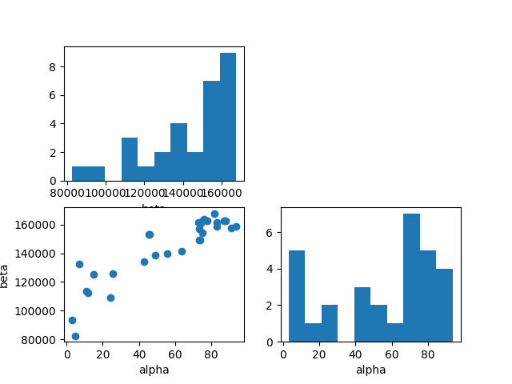
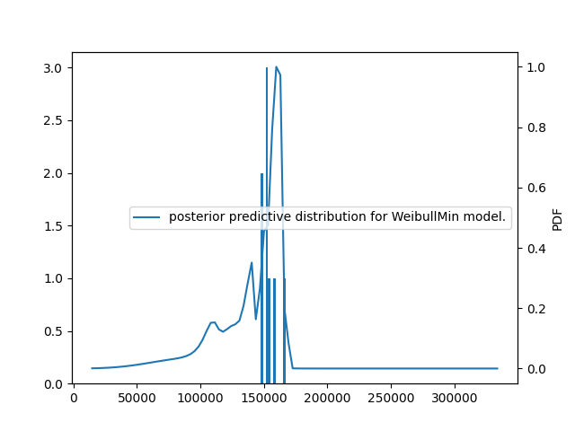
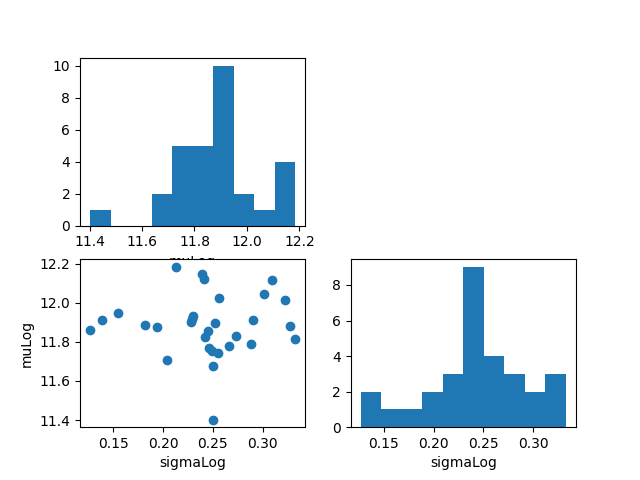
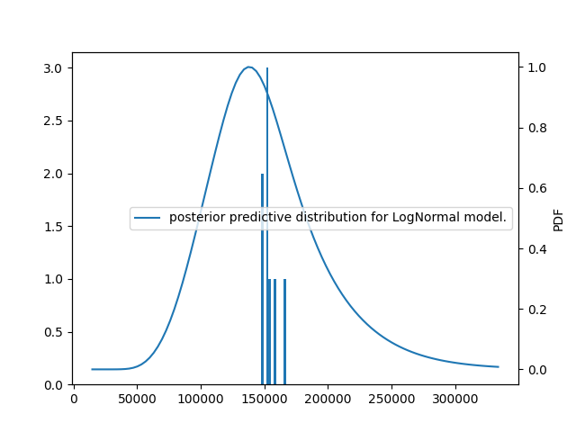
Out:
/home/sebastien.bocquet/PycharmProjects/vimseo/.tox/doc/lib/python3.11/site-packages/gemseo/utils/matplotlib_figure.py:59: UserWarning:
FigureCanvasAgg is non-interactive, and thus cannot be shown
First, for each model, the posterior samples are not uniformly distributed showing that priors were elicited.
# Furthermore,
# posterior predictive plots show
# that with a smaller number
# of degrees of freedom,
# the Weibull seems less appropriate
# than the Lognormal model.
# Finally, we instanciate
# the new checks:
check_l_b = PosteriorChecks(analysis_l_b.result)
check_w_b = PosteriorChecks(analysis_w_b.result)
# We can compute next the different criteria
# for the different models.
print(check_n)
print(check_w_b)
print(check_l_b)
Out:
Bayesian verification indices for Normal model.
+--------------------+--------------------+
| lppd | ml |
+--------------------+--------------------+
| 165.79369091250697 | 168.47600815078906 |
+--------------------+--------------------+
Bayesian verification indices for WeibullMin model.
+--------------------+--------------------+
| lppd | ml |
+--------------------+--------------------+
| 174.51300444734096 | 174.54281221781486 |
+--------------------+--------------------+
Bayesian verification indices for LogNormal model.
+--------------------+--------------------+
| lppd | ml |
+--------------------+--------------------+
| 167.07233312699876 | 189.61636925323802 |
+--------------------+--------------------+
By removing a degree of freedom the Weibull model becomes less accurate, The downgrade for the Lognormal model is not as significant. These conclusions are consistent with the observations from the posterior predictive plots. The marginal likelihoods are harder to compare because the priors are not compatible, either wider (Lognormal model) or smaller (Weibull model).
Total running time of the script: ( 2 minutes 12.813 seconds)
Download Python source code: plot_12_bayesian_calibration.py
Download Jupyter notebook: plot_12_bayesian_calibration.ipynb